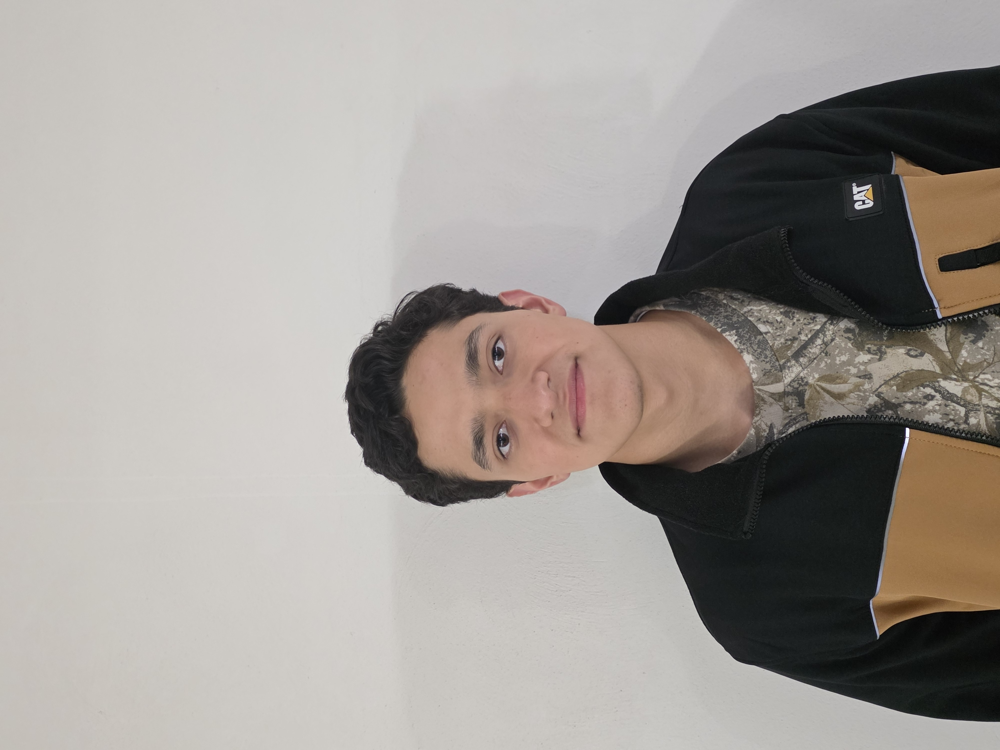

Registro digital del curso.
Aquí documentaremos las actividades, herramientas y el desarrollo de nuestro proyecto final a lo largo del semestre.

Información de contacto: 204560@iberopuebla.mx
Información de contacto: 203339@iberopuebla.mx